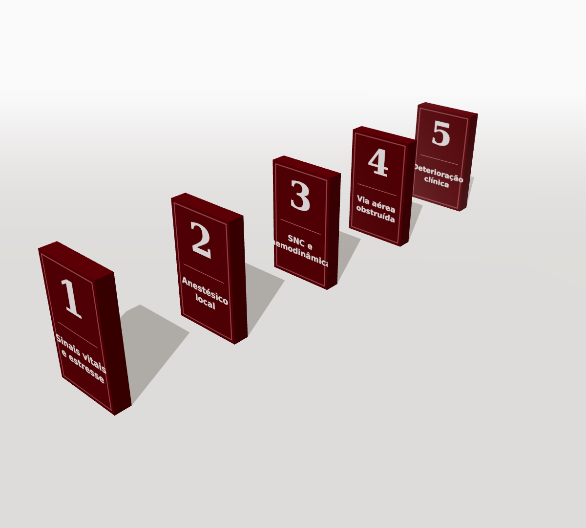
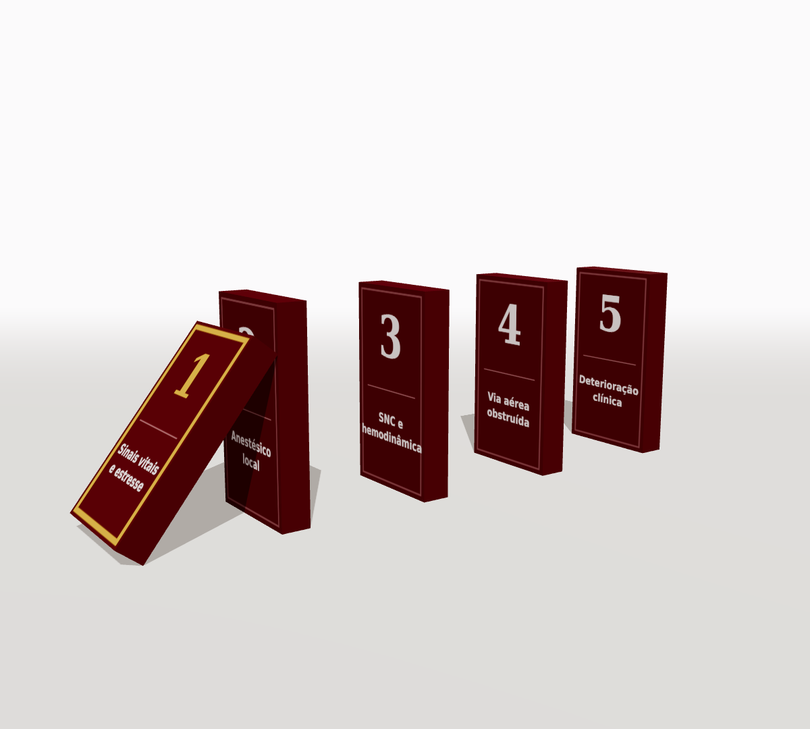
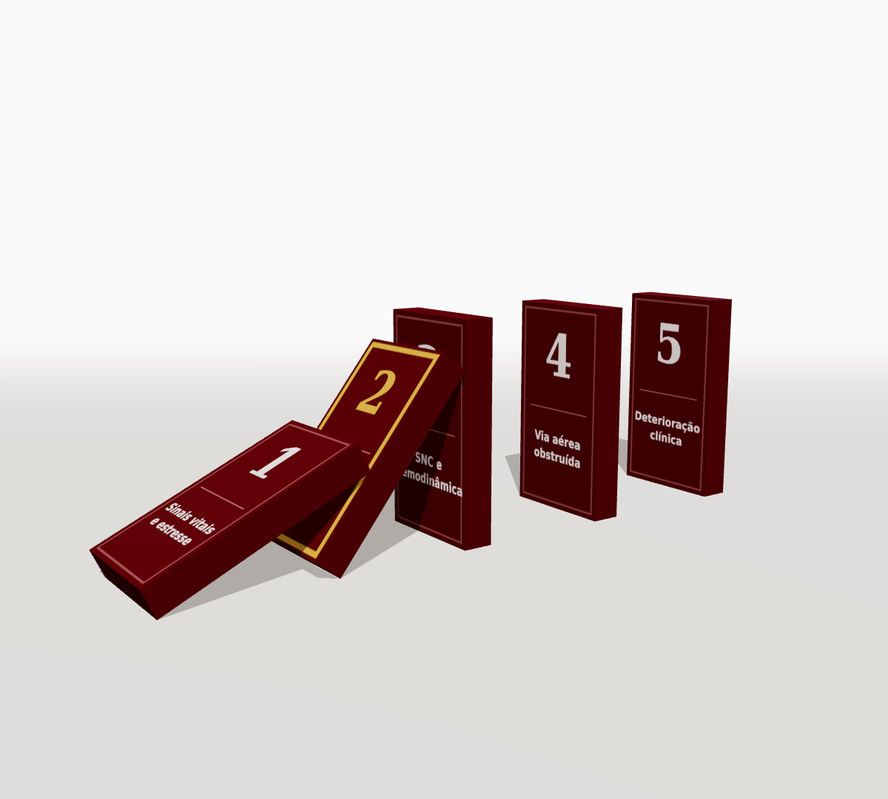
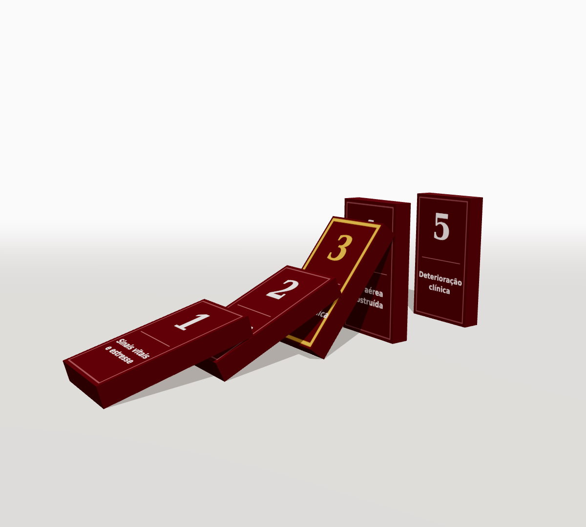
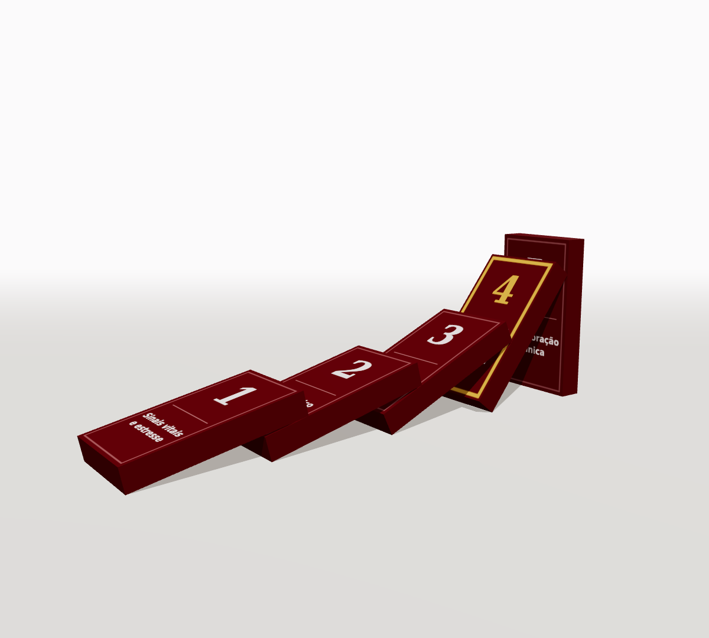
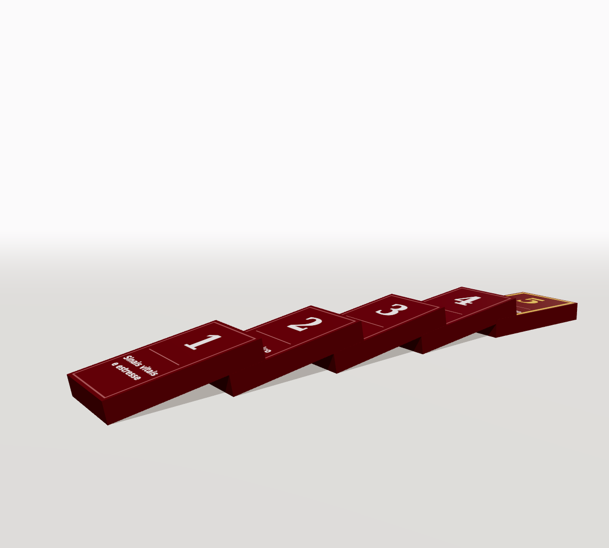

Aula #11
A via aérea não é da sedação.
É da Odontologia.
O efeito dominó: o risco que nós mesmos provocamos
Profa. Dra. Carla Gamba
O efeito dominó: o risco que nós mesmos provocamos
Profa. Dra. Carla Gamba



Paciente com doença cardiovascular: 0,04 mg de adrenalina
| Adrenalina | Tubetes de 1,8 mL |
|---|---|
| 1:80.000 | ≈ 1,8 |
| 1:100.000 | ≈ 2,2 |
| 1:200.000 | ≈ 4,4 |
Sem vasoconstritor: mais dor e mais anestésico.
Mais anestésico, além do limite?
Seguir com dor e adrenalina endógena?
Interromper, com o leito cirúrgico exposto?
Qual é a sua alternativa?

Palidez · inconsciência · bradicardia · hipotensão
Cimentação de coroas unitárias: maior chance de aspiração
Tiwana et al., JADA, 200444 aspirações em 11 anos; aspirados exigem mais hospitalização
Susini et al., Int Endod J, 2007Aspiração da chave do implante, Brasil
Araujo et al., J Stomatol Oral Maxillofac Surg, 2021Mais frequente entre profissionais de 1 a 7 anos de formados.
Bandas, segmentos de fio e chaves de expansor.

acertam a conduta na aspiração de corpo estranho
Shaath et al., Eur J Dent, 2023dos acadêmicos brasileiros não se sentem preparados para emergências
de Aquino et al., Eur J Dent Educ, 202687% treinados em SBV; 43% aptos a executar as manobras
Stafuzza et al., Braz Oral Res, 2014
Plano de Segurança do Paciente no consultório
"O cirurgião-dentista deverá estar apto a prevenir, reconhecer, manejar e resgatar."
Resolução CFO 295/2026, art. 11, §1º
Aferir a pressão arterial
Investigar ronco e apneia
STOP-Bang
Examinar a orofaringe
SARI
Aspiração eficaz
42 L/min
Reconhecer o risco
O efeito dominó
Prevenir
Avaliar em 2 minutos: STOP-Bang, Mallampati, SARI
Reconhecer, manejar, resgatar
PSP · SBV · SAVO
Avaliação de vias aéreas, monitorização, SBV e SAVO no mesmo percurso, rumo à Habilitação Básica em Sedação.
Envie TRILHA no WhatsApp · link na descrição
Nenhum curso habilita, inclusive o nosso. Quem habilita é o Conselho.
Todas as referências estão na descrição desta aula.